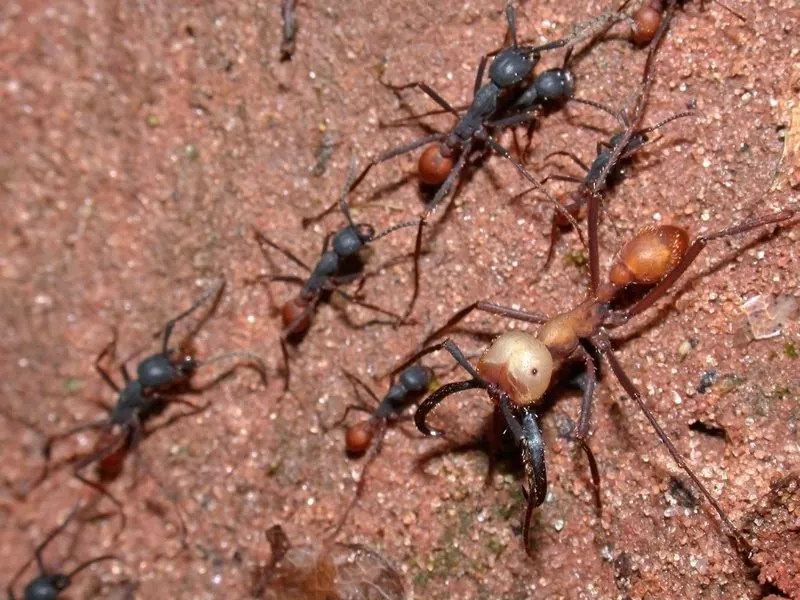

昆虫 · 动物界
威氏行军蚁 Eciton burchellii

新热带雨林中的行军蚁，群体数十万只，不筑固定巢，日间列队扫荡捕食，是雨林食物网中的重要角色。
- 分类
- 门节肢动物门纲昆虫纲目膜翅目科蚁科属行军蚁属
- 栖息环境
- 热带雨林林下落叶层，随蚁群每天迁移
- 地理分布
- 中美洲和南美洲的热带雨林
- 保护级别
- 暂无评估
物种志
威氏行军蚁工蚁体长可达 1–1.5 cm，体红褐色，头部大、上颚镰刀状，分为多个体型等级，兵蚁的头部巨大，适合搬运和防御，蚁后腹部膨大，随群体迁移，工蚁用身体保护蚁后和幼虫。
行军蚁不筑固定巢穴，而是形成由工蚁相互钩连而成的蚁团夜宿，白天成群出猎，以扇形队列扫过林下落叶层，捕食昆虫、蜘蛛、蜈蚣等小型动物，甚至攻击蜥蜴和雏鸟。群体规模可达数十万只，每天迁移一段距离。它分布在中美洲和南美洲的热带雨林，是雨林落叶层中的顶级捕食者之一。行军蚁的迁徙会带动其他生物活动，许多鸟类会跟随蚁群捕食被惊起的猎物，形成独特的生态现象。
形态与习性
- 食性捕食昆虫、蜘蛛、蜈蚣等小型动物，也攻击蜥蜴
- 体长工蚁约 1–1.5 cm，兵蚁头部巨大
- 社会结构群体可达数十万只，分级明显
- 巢穴不筑固定巢，工蚁相互钩连成蚁团夜宿
- 习性白天列队出猎，每天迁移一段距离
- 生态作用雨林落叶层的顶级捕食者之一
趣味知识
- 行军蚁没有固定巢穴，夜里工蚁互相钩连成一个大蚁团过夜。
- 它们白天排成扇形队列扫过落叶层，把猎物吓得四处逃窜。
- 许多鸟类会跟着行军蚁群走，捕食被惊起的昆虫。